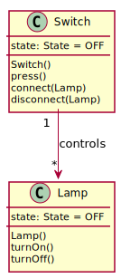
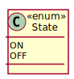

Cem drückt den Schalter neben der Tür seines Zimmers, daraufhin beginnen seine beiden Deckenlampen zu leuchten.
Objektorientierte Analyse und Modellierung
Objektorientierte Analyse
Vom Problem zu einem objektorientieren Modell
User-Story 1
Sequenzdiagramm User-Story 1
Objektdiagramme User-Story 1
Objektdiagramme User-Story 1
Objektdiagramme User-Story 1
Objektdiagramme User-Story 1
Klassendiagramm
Abbildung 1. Klassendiagramm
User-Story 2
Sequenzdiagramm User-Story 2
Klassendiagramm

Abbildung 2. Klassendiagramm
Objektorientiere Modellierung
englischsprachige Begriffe
Lampen und Schalter erstellen
Konstruktoren Switch() und Lamp()
Lampen und Schalter verbinden

Methoden connect(Lamp) und disconnect(Lamp)
Enumeration

Datentyp mit den Werten ON und OFF
enum State {
ON,
OFF
}Erweitertes Klassendiagramm